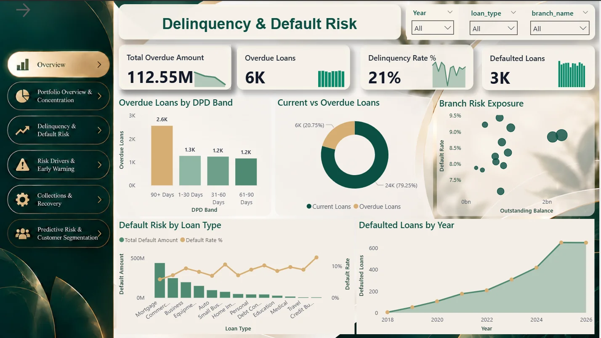

Power BI
From semantic modeling and KPIs to interactive reporting and risk-focused dashboards.

FROM MY BANKING RISK PROJECT · VIEW REAL WORK ↗
Turning complex data into clear decisions.
I transform raw data into meaningful business insights through interactive dashboards, clean data models, and actionable analysis.
My background in education strengthened my communication, structured thinking, and attention to detail. Through intensive training at DiGiLiANS and hands-on analytics projects, I've built skills to translate data into practical business insights.
View full 17-page portfolioPractical skills applied to real data challenges — from cleaning and modeling to insightful dashboards.
From semantic modeling and KPIs to interactive reporting and risk-focused dashboards.

Joins, aggregations, validation and Bronze / Silver / Gold analytical layers.
SELECT · JOIN · GROUP BYPivot Tables, Power Query, formula-based analysis and clear business reports.
CLEAN → ANALYZE → REPORTPandas, data exploration, visualization and introductory prediction models.
PANDAS · ANALYTICS · MLExplore three real projects through the business question, the analysis and the decisions each supports.
What can a bank learn about its portfolio, late payments, collections and customers at risk — before losses grow?
Select an analytical perspective to see the business question, the evidence, and the management response it supports.
Monitor delinquency bands and prioritize accounts before repayment issues escalate.
Sales trends, profitability, customer behavior and the impact of data-quality issues and discounting.
Revenue patterns, best-selling drinks, payment preferences and peak demand hours.
Services designed around the business question, not just the software.
Interactive Power BI reports that make your KPIs and performance trends easier to understand.
Clean, reconcile and reshape data so your analysis starts with a dependable foundation.
Investigate patterns, highlight potential risks and communicate practical recommendations.
Organized Excel and Power BI reports with clear definitions, trends and takeaways.
Connect business tables, define relationships and structure your data for repeatable reporting.
Explore a dataset to surface useful patterns, anomalies and opportunities.
Clear milestones, practical deliverables, and a focus on the decisions that matter.
Understand the stakeholders, decision, and success measures.
Clean, combine, validate, and model the information.
Design dashboards, explain findings, and recommend next steps.
Data Analyst · Business Intelligence · Dashboard & Reporting Projects